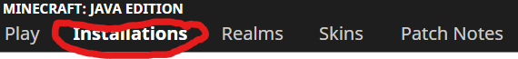
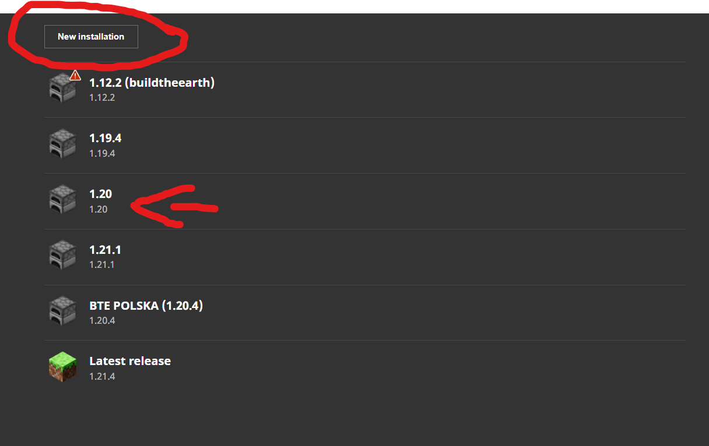
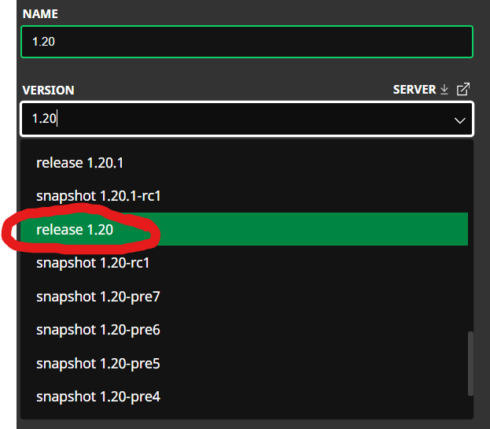
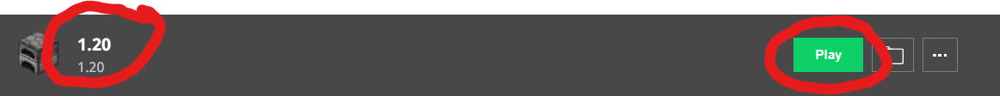

התקן גרסה ישנה הדרושה לשרת שלנו
1.20
שלב 1: עבור אל משגר Minecraft ולחץ על התקנות הכרטיסייה בחלק העליון.
שלב 2: בדוק אם יש לך גרסה 1.20 מותקנת, אני עושה, אבל למען ההוראות, אני לא. אם לא, לחץ על לחצן התשלומים החדש.
שלב 3: שם הפרק שלך איך שאתה רוצה, אני אקרא לזה 1.20, וגם לחפש שחרור 1.20 בסרגל החיפוש ולחץ לשחרר 1.20
שלב 4: נקישה התקן, אם לחצת על הפעל לאחר ההתקנה, הוא ייפתח לאחר שתסיים. אם לא עשית זאת או שאינך יודע כיצד להיכנס מחדש למשחק, עבור אל הכרטיסיה התקנות בחלק העליון, רחף מעל הפרק ולחץ על הפעל.

